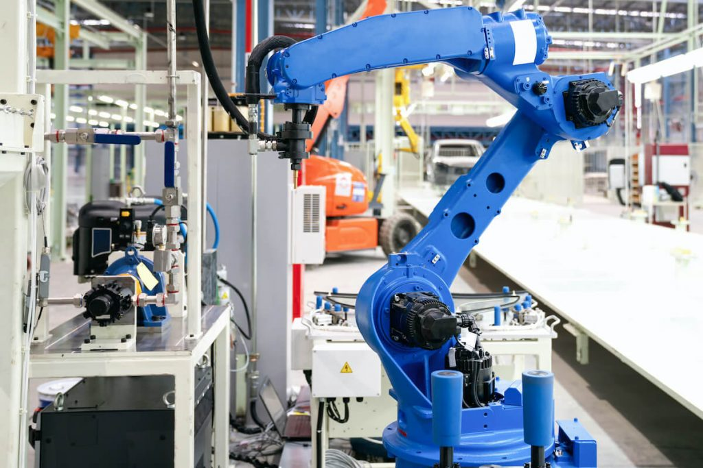

Revolusi 3.0
Perkembangan jaman mendorong kita untuk melakukan inovasi. Dimulai dengan Revolusi industri 1.0 yang ditandai dengan ditemukannya mesin untuk industri, lalu revolusi industri 2.0 ditandai dengan penemuan teknologi listrik untuk industri dan berikutnya revolusi industri ke-3 yang diawali dengan munculnya teknologi informasi dan elektronik yang masuk ke dalam dunia industri yaitu sistem otomatisasi berbasis komputer dan robot.
Peralatan industri sudah tidak lagi dikendalikan oleh manusia, namun sudah dikendalikan oleh komputer atau lebih dikenal dengan istilah komputerisasi. Pada periode ini (1960-2010) melahirkan inovasi pengembangan sistem perangkat lunak untuk memanfaatkan perangkat keras elektronik. Banyak penemuan dan pembuatan perangkat elektronik yang memungkinkan untuk melakukan otomatisasi operasional mesin-mesin menggantikan peran operator produksi.
Beberapa inovasi dan kemajuan pada periode Revolusi Industri 3.0 antara lain:
- Teknologi komputer
- Akses internet
- Peralatan elektronik smartphone
- Inovasi sistem perangkat lunak
- Inovasi dan pengembangan sumber energi baru
Dampak Revolusi Industri 3.0
Revolusi Industri 3.0 mengubah pola relasi dan komunikasi masyarakat kontemporer. Bisnis harus beradaptasi dengan kemajuan teknologi komputer, yang berkembang pesat setelah Perang Dunia II dengan penemuan semi konduktor, transistor, hingga kemunculan IC (Integrated Chip).